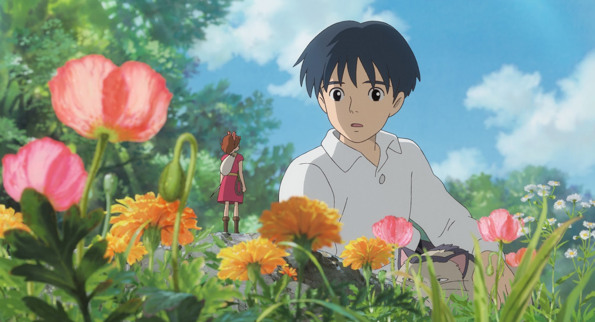
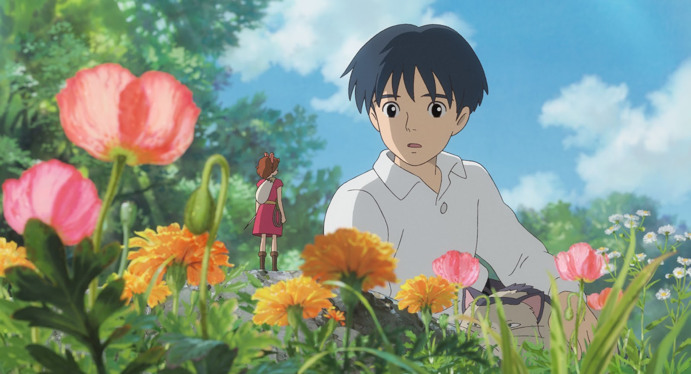

This is a sports animation series talking about the main character, Hinata Shouyou, a short middle school student, who are fond of playing volleyball after watching a national championship match on TV.
He then joined the school volleyball club and met a group of teammates to fight for victory.
The animations are produced based on the manga series and it started producing from 2012 up to season 4 in 2020. The production of the following seasons is still an ongoing.

This is a football animation series of a youth football player Ashito Aoi and his journey and experiences in the Tokyo Esperion youth academy.
An anime television series adaptation by Production I.G aired from April to September 2022.
| Top 1 | Haikyuu | link |
| Top 2 | My Hero Academia | link |
| Top 3 | Jujutsu Kaisen | link |
| Top 4 | Attak On Titian | link |
| Top 5 | The Disastrous Life of Saiki K. | link |
| Top 6 | Hunter X Hunter | link |
| Top 7 | KIMETSU NO YAIBA WIKI | link |
| Top 8 | Spy x Family | link |
Hayao Miyazaki (宮崎 駿, Miyazaki Hayao) who is a Japanese animator, director, producer, screenwriter, author, and manga artist.
He is the co-founder of Studio Ghibli and he has gained international recognition as a masterful storyteller and creator of Japanese animated feature films.
I have watched his movies since i was a child and Ponyo is the one having the strongest impression and touched. I have rewatched it for many times!
.png)
This is a story of tiny Arriety who meets a weak boy called Shawn by entering the large human world for lending supplies.
This movie may not be the famousest movie among all the Miyazaki's movies but I really liked the soundtrack of this movie!
 
